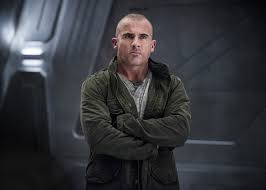
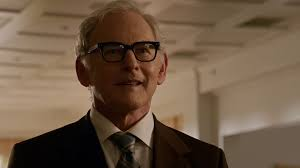
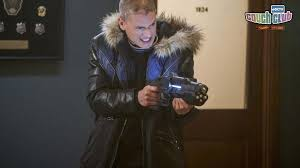

Legends of Tommorrow Season Recaps:
Season 1
The first main character introduced in the series is Rip Hunter, a member of the Time Masters, an organization tasked with protecting the timeline. Hunter goes rogue after Vandal Savage murders his family early in the series. Intending to stop Savage, Hunter recruits a team consisting of characters previously introduced in other CW programs including Ray Palmer / Atom, Sara Lance / White Canary, Martin Stein and Jefferson "Jax" Jackson / Firestorm, Kendra Saunders / Hawkgirl, Carter Hall / Hawkman, Leonard Snart / Captain Cold, and Mick Rory / Heat Wave. Season one’s primary storyline involves the team discovering that the Time Masters were backing Savage. The team destroys that organization, though they lose Snart and Rip in the process.
Season 2
In season two, with the Time Masters defeated, the team guard the timeline themselves, all while coping with Rip's disappearance. However, this season introduces the Legion of Doom, a time-travelling team led by Reverse Flash (Eobard Thawne). He’s shown to have recruited versions of Damien Darhk, Malcolm Merlyn, and Leonard Snart to find the Biblical Spear of Destiny, with which they can alter their fates. Season two also shows the team joined by Justice Society of America member Amaya Jiwe / Vixen and modern-day historian Nate Heywood / Steel, who later acquires the power to become solid metal.
Season 3
In season three, the team discovers that they created anachronisms throughout time after beating the Legion, though Rip has formed the Time Bureau to help fix them. He also tells them that Nora Darhk has resurrected her father, Damien, as well as recruited Amaya's villainous granddaughter, Kuasa, and enemy of the Flash Gorilla Grodd so that they can release the demon Mallus. Though the team loses Firestorm, they're joined by Zari Tomaz, a hacktivist from 2042 who wields an air-controlling amulet, and Wally West / Kid Flash, a speedster who trained under the Flash. Time Bureau agent and later director Ava Sharpe also starts working closely with the team in this season, entering a relationship with Nora
Season 4
In season four, occult detective John Constantine joins the team to help them hunt down magical fugitives that have been scattered throughout the timeline following the team's battle with Mallus. Along the way, they eventually discover that events surrounding the creatures have been orchestrated by the demon Neron, who Constantine has faced before. The Legends are joined further by the shapeshifter Charlie, who becomes stuck in Amaya's physical form after losing her powers, and Mona Wu, who has the ability to turn into a Kaupe.
Season 5
In progress
Characters:
- Sara Lance/White Canary

- Ray Palmer/ATOM
- Mick Rory/Heat Wave
- 
- Gideon
- Martin Stein/Firestorm
- 
- Jefferson Jax Jackson/Firestorm
- Rip Hunter
- Leonard Snart/Captain Cold
- 
- Kendra Saunders/Hawkgirl
- Carter Hall/Hawkman
- Eobard Thawne
- Amaya Jiwe/Vixen
- Wally West/Kid Flash
- Malcom Merlyn